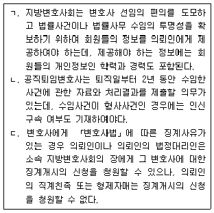
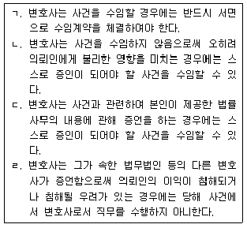
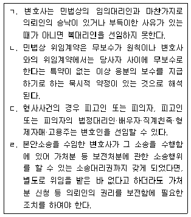
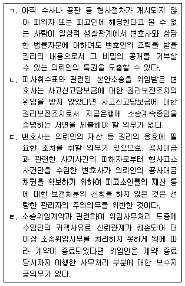
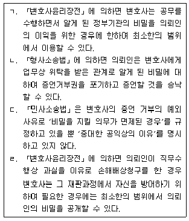
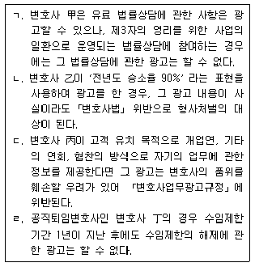
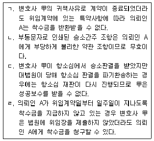
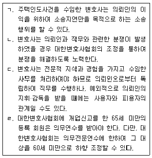
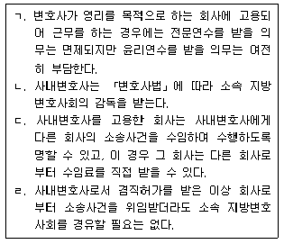
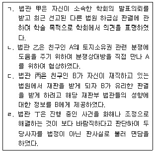

법조윤리 (2017-08-05 기출문제)
1과목: 임의 구분
1. 「변호사법」에 따른 형사처벌을 받는 경우가 아닌 것은?
- 변호사 甲은 교통사고로 인한 손해배상사건을 유상으로 유치할 목적으로 사무직원 A를 종합병원의 응급실에 주재하게 하였다.
- 변호사 乙은 재판연구원으로 근무하던 중 재판장의 지시로 사기사건에 대한 기록을 검토하였는데, 재판연구원의 임기를 마친 후 변호사로 개업하여 위 사건의 피고인 B로부터 사건을 수임하였다.
- 변호사 丙은 친구 C의 소개로 의뢰인 D로부터 공사대금청구사건을 수임하고 수임료 500만 원 중 50만 원을 C에게 소개비로 지급하였다.
- 변호사 丁은 수사 중인 횡령사건을 수임한 후 수임제한을 회피하기 위하여 변호인선임서를 제출하지 않고 담당 검사실을 방문하여 위 사건의 피의자 E를 변호하였다.
(정답률: 알수없음)

2. 변호사 징계정보의 공개 및 제공에 관한 설명 중 옳지 않은 것은?
- 대한변호사협회의 장은 징계처분정보를 징계처분의 확정일부터 2주일 이내에 인터넷 홈페이지에 게재하고 해당 징계처분의 확정일 이후 최초로 발간하는 대한변호사협회 발행 정기간행물에 게재하여야 한다.
- 영구제명이나 제명의 경우 징계처분정보를 최초 게재일부터 5년간 인터넷 홈페이지에 게재하여야 한다.
- 해당 변호사와 면담하였거나 사건수임계약을 체결하는 등 변호사를 선임한 자뿐 아니라 선임하려는 자도 징계정보의 열람·등사를 신청할 수 있다.
- 대한변호사협회의 장은 징계정보의 열람·등사 신청 목적이 변호사를 선임하기 위한 것이 아님이 명백한 경우에는 징계정보를 제공하지 아니할 수 있다.
(정답률: 알수없음)
3. 외국법자문사와 합작법무법인에 관한 설명 중 옳은 것은?
- 외국법자문사는 외국변호사의 자격을 취득한 후 「외국법자문사법」에 따라 법무부장관으로부터 자격을 승인받은 사람을 말한다.
- 외국법자문사는 대한민국 법령에 관한 사무가 포함되더라도 국제중재사건의 대리 사무를 처리할 수 있다.
- 합작법무법인은 외국법사무와 「외국법자문사법」에서 규정하는 국내법사무를 수행하기 위해 「외국법자문사법」에 따라 설립된 법인을 말한다.
- 합작법무법인은 「외국법자문사법」 및 다른 법률에 저촉되지 아니하는 범위에서 노동분야 자문 사무를 처리할 수 있다.
(정답률: 알수없음)
4. 지방변호사회와 대한변호사협회에 관한 설명 중 옳지 않은 것은?
- 등록이 취소된 변호사는 소속 지방변호사회를 당연히 탈퇴한다.
- 변호사 자격등록을 하지 않은 변호사에 대해서는 징계할 수 없다.
- 지방변호사회의 회원은 당연히 대한변호사협회의 회원이 된다.
- 대한변호사협회는 자율권이 인정되므로 총회의 결의 내용을 법무부장관에게 보고할 의무는 없다.
(정답률: 알수없음)
5. L법률사무소의 변호사 甲은 의뢰인 A로부터 민사사건을 수임하여 담당변호사로서 소송을 수행하는 과정에서 불법행위를 저질러 의뢰인 A에게 금전적인 손해를 발생시켰다. 이에 관한 설명 중 옳은 것은?
- L법률사무소가 공동법률사무소인 경우, 변호사 甲뿐만 아니라 L법률사무소에 속한 다른 변호사들도 무한연대책임을 부담한다.
- L법률사무소가 법무법인인 경우, 법무법인의 재산으로 법무법인의 채무를 완제할 수 없는 때에는 구성원 변호사 甲을 포함한 모든 구성원 변호사들은 연대하여 변제할 책임을 부담한다.
- L법률사무소가 법무법인(유한)인 경우, 변호사 甲이 구성원 아닌 소속 변호사라면 甲은 손해배상책임을 부담하지 않고, 甲을 지휘·감독한 구성원 변호사가 손해배상책임을 부담한다.
- L법률사무소가 법무조합인 경우, 변호사 甲이 구성원 변호사라면 甲을 포함한 모든 구성원 변호사들은 조합재산의 범위 내에서 손해배상책임을 부담한다.
(정답률: 알수없음)
6. 법무법인의 사무소에 관한 설명 중 옳지 않은 것은?
- 법무법인의 구성원과 구성원 아닌 소속 변호사는 법무법인 외에 따로 법률사무소를 둘 수 없다.
- 법무법인은 주사무소 이외에 분사무소를 둘 수 있으나, 주사무소에는 통산하여 5년 이상 「법원조직법」 제42조 제1항에 따른 경력을 가진 변호사를 포함하여 구성원의 3분의 1 이상이 주재하여야 한다.
- 법무법인의 분사무소는 시·군·구(자치구) 관할구역마다 1개를 둘 수 있으나, 주사무소의 소재지인 시·군·구(자치구)에는 별개의 분사무소를 둘 수 없다.
- 법무법인이 사무소를 개업 또는 이전하거나 분사무소를 둔 경우에는 지체 없이 주사무소 소재지의 지방변호사회와 대한변호사협회를 거쳐 법무부장관에게 신고하여야 한다.
(정답률: 알수없음)
7. 변호사와 의뢰인의 관계에 관한 설명 중 옳은 것을 모두 고른 것은?

- ㄴ
- ㄱ, ㄴ
- ㄱ, ㄷ
- ㄱ, ㄴ, ㄷ
(정답률: 알수없음)
8. 「변호사윤리장전」 중 사건의 수임 및 처리에 관한 사항으로 옳지 않은 것은?
- 변호사는 해당 사건을 수사 중인 공무원과 친족관계에 있을 때는 이를 미리 의뢰인에게 알려야 한다.
- 변호사는 사무직원이 사건유치를 목적으로 변호사의 명예와 품위에 어긋나는 방법으로 예상 의뢰인과 접촉하는 행위를 하지 않도록 주의한다.
- 변호사가 승소가능성이 낮은 사건을 수임하는 것은 위임의 목적이 현저히 부당한 사건의 수임에 해당되지 않는다.
- 변호사는 의뢰인이 다른 변호사에게 해당 사건을 의뢰하는 것을 방해하지 아니한다.
(정답률: 알수없음)
9. 「변호사법」상 변호사시험합격자의 수임제한 등에 관한 설명 중 옳지 않은 것은?
- 통산하여 6개월 이상 법률사무종사기관에서 법률사무에 종사하거나 연수를 마치지 아니하면 사건을 단독 또는 공동으로 수임할 수 없다.
- 최초로 단독 또는 공동으로 수임하는 경우에는 법률사무종사기관에서 법률사무에 종사하였다는 사실을 증명하는 확인서를 받아 지방변호사회를 거쳐 대한변호사협회에 제출하여야 한다.
- 통산하여 6개월 이상 대한변호사협회에서 연수를 마친 경우에는 단독으로 법률사무소를 최초로 개설하거나 법무법인, 법무법인(유한) 또는 법무조합의 구성원이 되더라도 법률사무종사기관에서 법률사무에 종사한 사실을 증명하는 확인서를 제출할 필요가 없다.
- 법률사무 종사 또는 연수 기간 중 법무법인에 취업한 자는 구성원 변호사와 함께 담당변호사로 지정될 수 있다.
(정답률: 알수없음)
10. 변호사의 수임제한 등에 관한 설명 중 옳지 않은 것은? (다툼이 있는 경우 판례에 의함)
- 변호사가 민사사건에서 소송대리인으로서 소송행위를 하는 등 직무를 수행한 경우, 나중에 민사사건과 기초가 된 분쟁의 실체가 동일한 형사사건에서 위 민사사건의 상대방인 피고인을 위한 변호인으로 선임되어 변호 활동을 하는 것은 허용되지 않는다.
- 수임사건의 동일성은 소송물이 동일한지 여부나 그 절차가 같은 성질의 것인지 여부 등 객관적 원칙에 따라 일반적·추상적으로 판단되어야 한다.
- 법무법인이 인가공증인으로서 법률행위에 관한 사실에 대한 공정증서를 작성한 사건을 수임 받아 소송에 관한 행위를 하면 형사처벌을 받는다.
- 변호사가 의뢰인과 대립되는 상대방으로부터 사건수임을 위해 상담했을지라도, 오로지 상담을 이유로 수임이 제한되는 것은 아니다.
(정답률: 알수없음)
11. 변호사의 수임제한에 관한 설명 중 옳은 것은?
- 법관으로 퇴직한 공직퇴임변호사는 수임제한기간 중에도 국선변호 등 공익목적의 수임은 할 수 있다.
- 변호사는 명백한 사항들과 관련된 증언을 하는 경우라도 스스로 증인이 되어야 할 사건을 수임하지 아니한다.
- 법무법인의 특정 변호사에게 상대방 또는 상대방 대리인과 친족관계에 해당되는 사유가 있으면 그 법무법인은 해당 사건을 수임할 수 없다.
- 변호사는 공정을 해할 우려가 있을 때에는 법률자문을 맡고 있는 민간기업체의 사건을 수임하지 아니한다.
(정답률: 알수없음)
12. 변호사와 의뢰인의 관계에 관한 설명 중 옳은 것을 모두 고른 것은?

- ㄱ, ㄷ
- ㄴ, ㄹ
- ㄷ, ㄹ
- ㄴ, ㄷ, ㄹ
(정답률: 알수없음)
13. 변호사가 사건을 수임함에 있어 관계되는 의뢰인들이 모두 동의하고 의뢰인의 이익이 침해되지 않는다는 합리적 사유가 있을 때에만 수임할 수 있는 경우에 해당되는 것은?
- 수임하고 있는 사건의 상대방이 위임하는 다른 사건
- 상대방의 대리인과 친족관계에 있는 경우
- 현재 수임하고 있는 사건과 이해가 충돌하는 사건
- 동일한 사건에 관하여 상대방을 대리하고 있는 경우
(정답률: 알수없음)
14. 변호사 甲은 X주식회사를 대리하여 Y주식회사를 상대로 대여금청구소송을 수행하고 있다. 그러던 중 X주식회사의 대표이사인 A가 술자리에서 Y주식회사의 전무인 B를 폭행한 혐의로 공소제기되었고, B는 甲을 대리인으로 선임하여 A를 상대로 불법행위로 인한 손해배상청구소송을 제기하려고 한다. 이에 관한 설명 중 옳은 것은?
- 甲은 손해배상청구사건을 수임할 수 없으나 X주식회사의 승낙이 있으면 수임할 수 있다.
- 甲은 손해배상청구사건을 수임할 수 없으나 A의 승낙이 있으면 수임할 수 있다.
- X주식회사와 대표이사 A는 실질적으로 동일한 주체라고 할 수 있으므로 甲은 손해배상청구사건을 수임할 수 없다.
- X주식회사와 대표이사 A는 별개의 법적 주체이므로 甲은 손해배상청구사건을 수임할 수 있다.
(정답률: 알수없음)
15. 「변호사법」상 변호사의 겸직 제한에 관한 설명 중 옳지 않은 것은?
- 변호사는 공공기관에서 위촉하는 업무를 수행할 때는 겸직허가를 받아야 한다.
- 변호사는 보수를 받으며 상시근무가 필요한 국립 경찰대학 전임교원을 겸직할 수 없다.
- 변호사는 소속 지방변호사회의 허가 없이 법무법인의 구성원이 될 수 있다.
- 휴업한 변호사는 소속 지방변호사회의 허가 없이 상업사용인이 될 수 있다.
(정답률: 알수없음)
16. 변호사의 비밀유지의무에 관한 설명 중 옳지 않은 것은?
- 폐업신고를 한 변호사라도 직무상 알게 되었던 비밀을 누설하여서는 아니 된다.
- 변호사는 직무상 알게 된 의뢰인의 비밀을 부당하게 이용하여서는 아니 된다.
- 변호사가 외부에 공개해서는 아니 되는 의뢰인이 제공한 문서 또는 물건은 직무와 관련하여 제출받은 것이어야 한다.
- 변호사는 업무상 위탁을 받아 보관하는 물건이 타인의 비밀에 관한 것이라면 그 타인의 승낙이 있는 경우에 한하여 압수를 거부할 수 없다.
(정답률: 알수없음)
17. 甲은 2014. 2.경부터 서울중앙지방검찰청 검사로 근무하다가 2016. 1. 5. 사직하고 2016. 2.경부터 L법무법인에서 변호사로 근무하게 되었다. L법무법인은 甲과 사실혼 관계에 있는 A가 서울중앙지방법원에 공소제기된 사기사건을 2016. 9. 1. 수임하였다. 한편 L법무법인은 B로부터 소유권이전등기말소청구사건을 수임하여 C를 상대로 소송을 수행하고 있었는데, C는 L법무법인이 특허소송에서 최고라고 생각하여 L법무법인을 특허무효소송의 대리인으로 선임하고자 한다. L법무법인으로부터 이 이야기를 전해 들은 B의 처 D는 이에 대해 동의하였다. 이에 관한 설명 중 옳지 않은 것은?
- 변호사 甲이 서울중앙지방검찰청 검사로 퇴직한 날부터 1년이 경과하기 전이라도 L법무법인은 위 사기사건을 수임할 수 있다.
- 사건당사자와 변호사가 「변호사법」상 특수한 관계에 있는 경우에는 공직퇴임변호사의 수임제한규정이 적용되지 않으므로 L법무법인은 甲과 사실혼 관계에 있는 A의 사건을 수임하여 甲을 담당변호사로 지정할 수 있다.
- 소유권이전등기말소청구소송과 특허무효소송의 담당변호사가 다르더라도 수임제한사유 유무는 L법무법인 전체를 기준으로 판단하여야 한다.
- L법무법인은 B가 동의한 경우에는 특허무효소송을 수임할 수 있으나 B의 처 D의 동의만으로는 수임할 수 없다.
(정답률: 알수없음)
18. 변호사와 의뢰인의 관계에 관한 설명 중 옳은 것을 모두 고른 것은? (다툼이 있는 경우 판례에 의함)

- ㄱ, ㄴ
- ㄱ, ㄷ
- ㄱ, ㄴ, ㄹ
- ㄴ, ㄷ, ㄹ
(정답률: 알수없음)
19. 법무법인의 책임에 관한 설명 중 옳지 않은 것은? (다툼이 있는 경우 판례에 의함)
- 법무법인의 대표변호사 甲은 업무집행 중 불법행위를 한 경우에만 법무법인과 연대하여 손해배상책임을 부담하고, 소송위임계약상의 채무불이행으로 인한 손해배상책임에 대해서는 연대책임을 부담하지 않는다.
- 법무법인의 구성원이 아닌 변호사 乙이 의뢰인에게 자기를 법무법인의 구성원이라고 오인시키는 행위를 하였을 때에는 오인으로 인하여 법무법인과 거래한 의뢰인에 대하여 법무법인의 구성원 변호사와 동일한 책임을 진다.
- 법무법인의 구성원 변호사 丙은 탈퇴하더라도 그 등기를 하기 전에 생긴 법무법인의 채무에 대하여는 등기 후 2년 내에는 다른 구성원 변호사와 동일한 책임이 있다.
- 법무법인의 성립 후에 가입한 구성원 변호사 丁은 가입한 이후에 발생한 법무법인의 채무에 대하여 책임을 부담할 뿐이고, 그 가입 전에 생긴 법무법인의 채무에 대해서는 연대책임을 부담하지 않는다.
(정답률: 알수없음)
20. 변호사와 의뢰인의 관계에 관한 설명 중 옳은 것을 모두 고른 것은? (다툼이 있는 경우 판례에 의함)

- ㄴ
- ㄱ, ㄴ
- ㄱ, ㄹ
- ㄴ, ㄷ
(정답률: 알수없음)
2과목: 임의 구분
21. 변호사 업무광고로 허용되는 것은?
- 변호사 甲은 시내버스 외부에 법률사무소 광고를 하였다.
- 변호사 乙은 유료 법률상담 전화를 이용한 상담을 하면서 운영업체에 상담료의 일정 비율을 중개료로 지급하였다.
- 변호사 丙은 구청에서 실시하는 무료 법률상담에 참여하여 상담하는 동안 상담실 바깥 탁자에 명함을 놓아두어 민원인들이 가져갈 수 있게 하였다.
- 변호사 丁은 과거 의뢰인이었던 회사의 법무팀 직원이 다른 회사의 법무팀장이 된 것을 알고 전화를 걸어 법률사무소 홍보를 하였다.
(정답률: 알수없음)
22. 변호사의 비밀유지의무에 관한 설명 중 옳은 것을 모두 고른 것은?

- ㄴ, ㄹ
- ㄷ, ㄹ
- ㄱ, ㄴ, ㄷ
- ㄴ, ㄷ, ㄹ
(정답률: 알수없음)
23. 변호사 업무광고로 허용되는 것은?
- 변호사 甲은 「변호사 전문분야 등록에 관한 규정」에 따라 형사법을 전문분야로 등록한 후 ‘형사법 분야의 국내 최고 전문 변호사’라고 지역신문에 광고하였다.
- 변호사 乙은 관할구청의 허가를 받아 도로 현수막 게시대에 주요 취급업무, 사무실 위치 및 전화번호 등의 내용이 적힌 현수막을 설치하였다.
- 변호사 丙은 지역신문에 광고하면서 법관 경력을 기재하였다.
- 변호사 丁은 미국 캘리포니아 주 변호사 자격을 취득한 후 자신을 국제변호사로 소개하는 내용의 광고를 하였다.
(정답률: 알수없음)
24. 변호사 업무광고에 관한 설명 중 옳은 것을 모두 고른 것은?

- ㄱ, ㄴ
- ㄱ, ㄹ
- ㄷ, ㄹ
- ㄱ, ㄴ, ㄹ
(정답률: 알수없음)
25. 서울 서초구에 법률사무소를 둔 변호사 甲은 2016. 1. 3. 의뢰인 A로부터 서울중앙지방법원 관할의 형사사건과 민사사건을 수임하면서 형사사건에 대하여는 서면으로 착수금과 성공보수약정을 하였다. 그리고 민사사건에 대하여는 추후 수임료를 정하기로 하고, 소송비용만 일단 甲이 먼저 지출하고 나중에 A가 이를 甲에게 지급하는 것으로 구두 약정하였다. 甲이 위 각 사건을 수임한 후 형사사건은 A에 대하여 추가로 기소된 사건과의 병합을 위해 부산지방법원으로 이송되었다. 甲은 A로부터 의뢰받은 민사사건에서 승소하여 상대방으로부터 공탁금을 수령하여 보관하고 있고, 형사사건도 무죄판결을 이끌어 내었다. 이에 관한 설명 중 옳지 않은 것은? (다툼이 있는 경우 판례에 의함)
- 변호사 甲은 위 민사사건에서 A와 수임료를 구체적으로 합의하지 않더라도 상당하다고 인정되는 보수를 A에게 청구할 수 있다.
- 변호사 甲은 A로부터 의뢰받은 형사사건에 대하여 A에게 성공보수를 청구할 수 없다.
- 변호사 甲은 서면약정 없이는 A에게 반환할 공탁금을 자신이 A로부터 아직 지급받지 못한 소송비용 관련 채권과 상계할 수 없다.
- 변호사 甲은 A에게 형사사건의 관할법원 변경으로 인해 추가로 발생하는 시간과 노력을 고려하여 수임료의 추가 지급을 요구할 수 있다.
(정답률: 알수없음)
26. 변호사의 사건수임에 관한 설명 중 옳은 것은? (다툼이 있는 경우 판례에 의함)
- 변호사 아닌 자가 법률사건을 변호사에게 알선하고 그 대가를 지급받았다고 하더라도 변호사와 의뢰인 사이에 위임계약이 성립하지 않았다면 「변호사법」 위반이 아니다.
- 변호사가 법률사건을 다른 변호사에게 알선하고 그 대가를 지급받은 것은 ｢변호사법｣ 위반이 아니다.
- 법률사건 또는 법률사무의 알선에 대한 대가로서의 금품 지급에 관한 약속은 그 방법에 아무런 제한이 없고, 반드시 명시적일 필요도 없다.
- 변호사가 자신의 법률사무소 사무직원의 알선으로 사건을 소개받았다면 의뢰인으로부터 받은 수임료는 「변호사법」에서 금지하는 알선대가이므로 몰수·추징의 대상이 된다.
(정답률: 알수없음)
27. 변호사 甲은 고객들에게 자신의 법률사무소 명칭이 기재된 연하장을 우편으로 보내면서 ‘부동산법 일반’에 관한 세미나에 참석을 부탁하는 안내문을 함께 송부하였다. 또한 甲은 위 안내문을 법률사무소 인근 아파트 단지 주민들에게 우편으로 발송하였고, 우편 발송이 어려운 아파트 단지에는 개별 방문하여 안내문을 배포하였다. 한편 甲은 현재 재건축과 관련하여 분쟁이 진행 중인 X아파트 재건축조합에 “귀하의 아파트 재건축 분쟁사건을 담당하고 있는 변호사 乙, 丙보다 제가 재건축업무를 더 잘하며, 乙, 丙이 상대방을 대리한 소송에서도 모두 승소하였습니다.”라는 내용의 홍보성 우편물을 발송하였다. 이에 관한 설명 중 옳은 것은?
- 변호사 甲이 고객에게 연하장을 보낸 것은 친분에 의한 것이므로 광고에 해당하지 않는다.
- 변호사 甲이 인근 아파트 주민들에게 세미나 안내문을 우편으로 발송하는 것은 소속 지방변호사회의 허가를 받으면 허용된다.
- 변호사 甲이 아파트 주민을 개별 방문하여 세미나 안내문을 배포하는 것은 해당 주민의 동의가 있으면 허용된다.
- 변호사 甲이 변호사 乙, 丙과 자신을 비교하는 내용의 홍보성 우편물을 발송하는 것은 소속 지방변호사회의 허가를 받으면 허용된다.
(정답률: 알수없음)
28. 변호사 보수에 관한 설명 중 옳지 않은 것은? (다툼이 있는 경우 판례에 의함)
- 수인의 공동당사자가 변호사에게 소송대리를 위임한 경우 그 보수금 지급 채무에 있어서는 특별한 약정이 없는 한 각자가 분할채무를 부담한다.
- 주식회사의 대표이사가 회사를 위한 탈세행위로 인하여 형사재판을 받을 경우 그 대표이사가 변호사 보수를 회사자금으로 지급하더라도 횡령죄에 해당되지 않는다.
- 선정당사자가 선정자로부터 별도의 수권 없이 변호사 보수에 관한 약정을 하였다면 선정자들이 이를 추인하는 등의 특별한 사정이 없는 한 선정자에 대하여 효력이 없다.
- 변호사의 보수를 결정할 때 변호사의 경험과 능력도 고려 대상이므로 검사로 장기간 근무한 경력이 있다면 그 점도 보수 결정에 반영될 수 있다.
(정답률: 알수없음)
29. 변호사 甲은 의뢰인 A와 구상금청구의 항소사건만으로 수임 범위를 한정하는 소송위임계약을 체결하였고, 그 위임계약서에는 “의뢰인이 임의로 청구의 포기 또는 인낙, 화해하거나 소를 취하하는 경우 전부 승소한 것으로 본다.”라는 승소간주 조항이 부동문자로 인쇄되어 있다. 또한 위 계약의 특약사항으로 “1) 착수금은 계약 당일 변호사 甲이 정한 계좌로 입금한다. 2) 착수금은 어떠한 일이 있어도 반환하지 않는다. 3) 성공보수는 상고심 결과와 관계없이 당해 항소사건의 판결선고 시에 지급한다.”라는 내용이 포함되어 있다. 이에 관한 설명 중 옳은 것을 모두 고른 것은? (다툼이 있는 경우 판례에 의함)

- ㄱ, ㄴ
- ㄱ, ㄷ
- ㄴ, ㄹ
- ㄷ, ㄹ
(정답률: 알수없음)
30. 변호사의 직무와 그 한계에 관한 설명 중 옳지 않은 것은? (다툼이 있는 경우 판례에 의함)
- 법무법인이 직접 인터넷사이트를 개설한 후 업무담당 변호사를 지정하여 그 담당변호사로 하여금 위 인터넷사이트를 통하여 법무법인의 명의로 온라인 유료 법률상담을 하게 하는 것은 법무법인의 업무집행방법에 관한 「변호사법」 위반이다.
- 「변리사법」상 변리사 자격을 가진 변호사가 변리사로서 변리사 업무를 시작하기 위해서는 특허청장에게 등록하여야 한다.
- 변호사의 자격이 있는 자는 세무사의 자격을 가지나, 세무사 자격시험에 합격하지 않은 변호사는 비록 세무사 자격이 있더라도 「세무사법」 (2003. 12. 31. 법률 제7032호) 부칙 제2조 제1항의 적용대상에 해당하지 않는 이상 세무사등록부에 세무사로 등록할 수 없다.
- 「세무사법」에 따라 세무사 등록을 할 수 있는 변호사가 법무법인의 구성원 또는 소속 변호사로 근무하는 것은 세무사 등록 거부사유인 ‘영리를 목적으로 하는 법인’의 업무집행사원·임원 또는 사용인이 되어 영리 업무에 종사하는 경우에 해당하지 않는다.
(정답률: 알수없음)
31. 변호사 윤리에 관한 설명 중 옳지 않은 것을 모두 고른 것은? (다툼이 있는 경우 판례에 의함)

- ㄱ, ㄴ
- ㄱ, ㄹ
- ㄷ, ㄹ
- ㄱ, ㄴ, ㄹ
(정답률: 알수없음)
32. 변호사 윤리에 관한 설명 중 옳지 않은 것은? (다툼이 있는 경우 판례에 의함)
- 변호사가 아닌 자에게 고용되어 법률사무소의 개설·운영에 관여한 변호사는 변호사가 아닌 자의 공범으로 처벌될 수 있다.
- 변호인이 신체구속을 당한 사람에게 법률적 조언을 하는 것은 그 권리이자 의무이므로 변호인이 적극적으로 피고인 또는 피의자로 하여금 허위진술을 하도록 하는 것이 아니라 단순히 헌법상 권리인 진술거부권이 있음을 알려 주고 그 행사를 권고하는 것을 변호사로서의 진실의무에 위배되는 것이라고는 할 수 없다.
- 형사사건에서 성공보수약정은 수사·재판의 결과를 금전적인 대가와 결부시킴으로써, 기본적 인권의 옹호와 사회정의의 실현을 사명으로 하는 변호사 직무의 공공성을 저해하고, 의뢰인과 일반 국민의 사법제도에 대한 신뢰를 현저히 떨어뜨릴 위험이 있으므로, 선량한 풍속 기타 사회질서에 위배되어 무효이다.
- 누구든지 법률사건의 수임에 관하여 당사자를 변호사 또는 그 사무직원에게 소개한 후 그 대가로 금품 기타 이익을 받아서는 아니 되는데, 이 행위에 해당하려면 소개된 사무직원이 반드시 금품 등이 수수될 때까지 사무직원으로서의 지위를 유지하고 있어야 하는 것은 아니지만 소개될 당시에는 사무직원이어야 한다.
(정답률: 알수없음)
33. 공직퇴임변호사에 관한 설명 중 옳지 않은 것은?
- 수원지방검찰청 검사로 근무하다 퇴직한 변호사 甲이 퇴직한 지 3개월 만에 수원지방법원에 계속된 민사사건 중 수원지방변호사회가 공익 목적으로 지정한 개인회생사건을 통상 수임료의 3분의 1 가격으로 수임하는 것은 수임제한 규정에 위반된다.
- 대구지방경찰청장으로 퇴직한 변호사 乙은 퇴직 직후 L법무법인의 구성원이 되었다. 그로부터 10개월 뒤 대구지방검찰청이 처리하는 사건을 L법무법인이 수임하는 것은 수임제한 규정에 위반된다.
- 변호사 丙은 판사로 재직 시 X회사의 회생절차 중 Y회사와 체결한 하도급계약에 관한 직무를 취급하였다. 丙이 변호사 개업 2년 후 X회사의 소송대리인으로 선임되어 X회사와 별도의 하도급계약을 체결한 Z회사를 상대로 소송을 진행하더라도 수임제한 규정에 위반되지 않는다.
- 서울고등법원 판사로 근무하다 퇴직한 변호사 丁은 퇴직 후 1년간 서울고등법원이 처리하는 사건을 수임할 수 없으나 서울중앙지방법원이 처리하는 사건은 기간제한 없이 수임할 수 있다.
(정답률: 알수없음)
34. 「변호사법」상 법조윤리협의회에 관한 설명 중 옳지 않은 것은?
- 위원장은 대한변호사협회의 장이 지명하거나 위촉하는 위원 중에서 재적위원 과반수의 동의로 선출한다.
- 위원장은 특정변호사에게 위법의 혐의가 있는 것을 발견하였을 때에는 지방검찰청 검사장에게 그 변호사에 대한 수사를 의뢰할 수 있다.
- 퇴직공직자가 법무법인에 취업한 때에는 법무법인은 취업일부터 2년 동안 취업한 퇴직공직자의 명단과 업무활동내역을 법조윤리협의회에 제출하여야 한다.
- 공직퇴임변호사의 수임 자료와 처리 결과에 대하여 거짓 자료를 제출한 자에게는 과태료를 부과한다.
(정답률: 알수없음)
35. 사내변호사에 관한 설명 중 옳은 것은?

- ㄱ
- ㄴ
- ㄴ, ㄷ
- ㄴ, ㄹ
(정답률: 알수없음)
36. 「법관윤리강령」에 위반되는 행위를 모두 고른 것은?

- ㄱ, ㄹ
- ㄴ, ㄷ
- ㄷ, ㄹ
- ㄴ, ㄷ, ㄹ
(정답률: 알수없음)
37. 甲은 대전고등법원의 재판연구원으로 임용되어 위 법원 민사1부에서 근무하다가 2016. 12. 31. 퇴직하고 2017. 2. 1. L법무법인에 취업하였다. 이에 관한 설명 중 옳은 것은?
- 甲이 대전고등법원 민사1부에서 재판을 하고 판결을 선고한 사건에 재직 중 관여한 바가 없더라도 L법무법인이 그 사건의 상고대리인이 되는 것은 허용되지 않는다.
- 甲은 공직퇴임변호사에 해당되지 아니하므로 대전고등법원에 계속 중인 사건의 담당변호사로 지정될 수 있다.
- 甲이 재판연구원에서 퇴직하고 변호사로 개업하면 수임사건 수와 관계없이 퇴직일부터 1년까지는 「변호사법」상 특정변호사에 해당한다.
- 甲이 대전고등법원 민사1부에서 근무하는 동안 재판장의 지시로 특정사건을 검토한 후 보고서 작성에 그친 것이라면, 甲은 L법무법인에서 담당변호사로 그 사건을 처리할 수 있다.
(정답률: 알수없음)
38. 검사의 직무윤리에 관한 설명 중 옳지 않은 것은?
- 검사는 자신이 취급하는 사건의 피의자나 피해자 등 사건 관계인 기타 직무와 이해관계가 있는 자와 정당한 이유 없이 사적으로 접촉하지 아니한다.
- 검사는 수사 등 직무와 관련된 사항에 관하여 검사의 직함을 사용하여 대외적으로 의견을 기고·발표하는 등 공표할 때에는 소속 기관장의 승인을 받는다.
- 검사는 직무에 관한 상급자의 지휘·감독에 따라야 하지만 구체적 사건과 관련된 상급자의 지휘·감독의 적법성이나 정당성에 이견이 있을 때에는 절차에 따라서 이의를 제기할 수 있다.
- 검사는 ‘취급 중인 사건의 사건 관계인과 친족관계에 있거나 그들의 변호인으로 활동한 전력이 있을 때’ 이외의 친분 관계 기타 특별한 관계가 있는 경우에도 수사의 공정성을 의심받을 우려가 있다고 판단했을 때에는 그 사건을 회피하여야 한다.
(정답률: 알수없음)
39. 변호사 甲은 승소가능성이 전혀 없는 조상 땅 찾기 소송에서 반드시 승소할 것처럼 의뢰인들을 기망하여 사건을 수임함으로써 변호사보수 상당의 금전을 편취하였다는 내용 등으로 사기 및 변호사법위반으로 공소제기되어 1심 및 2심에서 징역 1년에 집행유예 2년의 형을 선고받고 대법원에 상고하였다. 이에 관한 설명 중 옳은 것은?
- 대법원이 위 상고를 기각할 경우 형의 확정과 동시에 변호사 甲은 변호사 자격을 상실하고 대한변호사협회 등록심사위원회의 의결을 거쳐 등록이 취소된다.
- 변호사 甲이 위 형의 확정으로 변호사 등록이 취소된 경우 형의 확정일부터 5년이 경과하여야만 다시 변호사 등록을 할 수 있다.
- 법무부장관은 상고심 재판 계속 중에도 등록취소의 가능성이 매우 크다는 이유만으로 변호사 甲에게 법무부징계위원회의 결정에 따라 업무정지명령을 할 수 있다.
- 변호사 甲이 위 형의 확정으로 변호사 등록이 취소되었다가 재등록 후 직무 외 품위손상행위로 정직의 징계처분을 받고, 다시 「변호사법」을 위반하여 변호사로서의 직무를 수행하는 것이 현저히 부적당하다고 인정되는 경우에는 甲을 영구제명할 수 있다.
(정답률: 알수없음)
40. 법무법인의 사건 수임 등에 관한 설명 중 옳은 것은?
- L법무법인의 구성원 아닌 변호사 甲이 국토교통부 중앙공동주택관리분쟁조정위원회의 조정위원으로서 A와 B 사이의 분쟁에 대한 조정업무를 처리하였더라도 L법무법인은 그 조정에 불복하여 제기한 소송을 수임할 수 있다.
- L법무법인의 구성원 변호사 乙은 공정거래위원회의 비상임위원을 겸직하고 있다. L법무법인은 구성원 변호사 丙을 담당변호사로 지정한다면 X회사로부터 공정거래위원회의 조사사건을 제한 없이 수임할 수 있다.
- L법무법인의 구성원 변호사 丁은 C를 대리하여 D를 상대로 한 이혼소송 업무를 담당하고 있다. 한편 D가 E를 상대로 한 대여금반환청구 소송을 준비하면서 변호사 丁에게 수임을 부탁하는 경우 변호사 丁은 C의 동의를 받아야 수임할 수 있다.
- L법무법인의 구성원 변호사 戊는 위 변호사 丁이 의뢰인 C와 관련하여 직무상 비밀유지의무를 부담하는 사항을 알게 된 경우, L법무법인이 해산되면 비밀유지의무로부터 벗어날 수 있다.
(정답률: 알수없음)